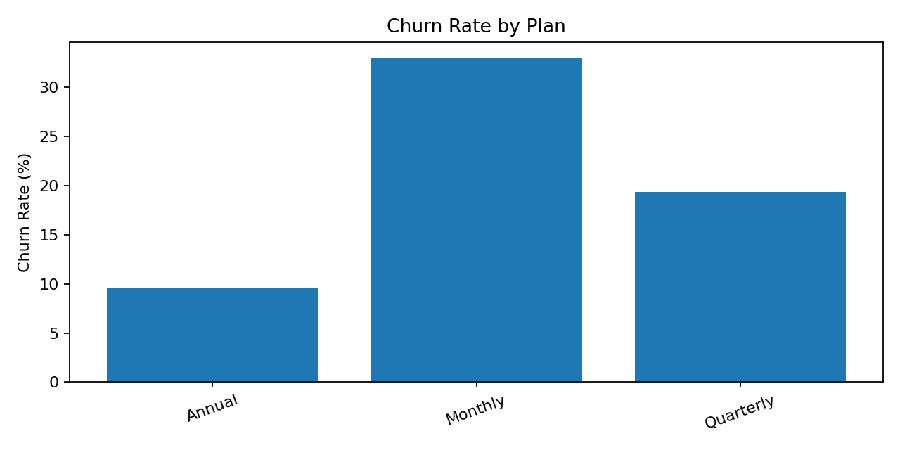
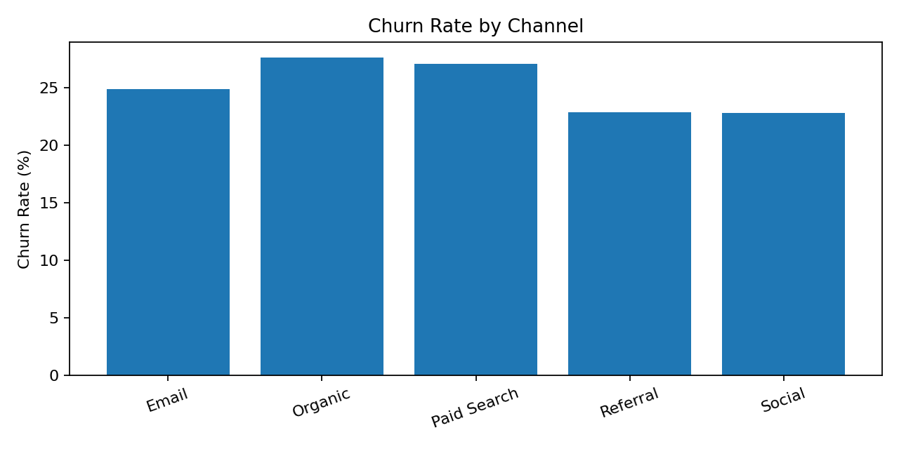
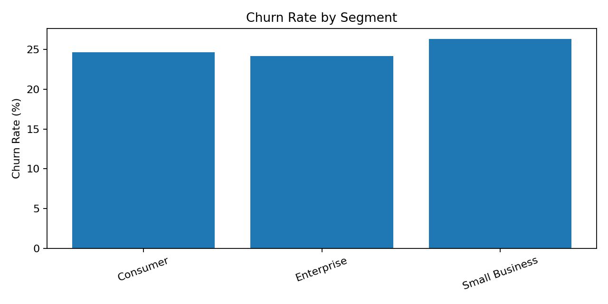

Customer Retention & Churn Analysis
Future Interns – Data Science & Analytics | Task 2
Customers
3,000
Overall Churn
25.1%
Avg Tenure
10.0 months



Insights
- Monthly has the highest plan-level churn.
- Organic has the highest channel-level churn.
- Retention should be monitored by plan, segment and acquisition channel.
Recommendations
- Strengthen onboarding for high-risk plans.
- Test annual-plan incentives for suitable monthly subscribers.
- Audit high-churn acquisition channels for lead quality and expectation mismatch.
- Monitor retention by signup cohort.